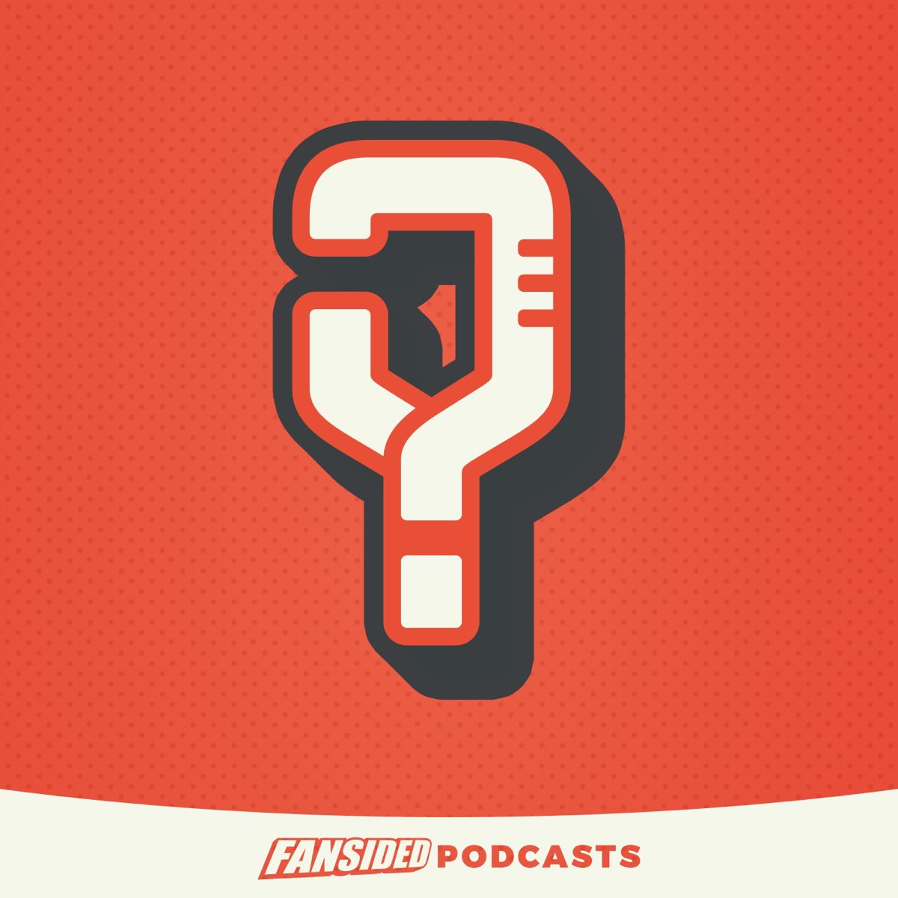

Media entrepreneur & executive.
Co-founder of FanSided. EVP of Communities at Sports Illustrated
Zach has spent his career building connections between people, communities, audiences, and ideas. His experience spans education, entrepreneurship, media, and development, but the common thread has always been relationships. Whether building a company from the ground up, growing communities around some of the biggest brands in media, or developing new opportunities closer to home, he believes the strongest businesses are built around people first.

Three vantage points
Founder Started FanSided from a blank page and built the architecture it needed — a distributed contributor network, hundreds of localized brands, and the editorial standards to hold them together.
Operator Scaled that network to acquisition, then led it through integration into a national media company and the platform shifts that followed.
Executive Runs communities at Sports Illustrated today, aligning editorial, product and sales across a portfolio of brands.
Track record
EVP, Communities — Sports Illustrated
Oversees the SI ONSI network and the FanSided brands.Developer — Harper Ridge
Investor and developer of a 159-lot neighborhood. Over 200 lots developed in the past five years.General Manager, Minute Media
Ran the FanSided business ahead of the Sports Illustrated rebrand.FanSided acquired by Time Inc.
Founder to executive, through the integration into a national media organization.Co-founded FanSided
One sports site became a contributor network of hundreds of localized fan brands.Seven years as an educator
Where the habits of clear communication and developing people were formed.Podcast

What’s Your Y?
Conversations built with Special Olympics athletes and Unified partners, made as part of FanSided Podcasts. Inclusive storytelling as professional practice, not charity.
Open to board service and selective advisory work.
The strongest boards pair rigorous governance with operating experience. Zach brings all three vantage points to the table.
Get in touch- Media networks and publishing groups
- Sports and entertainment platforms
- Digital community and technology businesses
- Mission-driven and inclusion-focused organizations
- Real estate development and land use
- Nonprofits and youth development